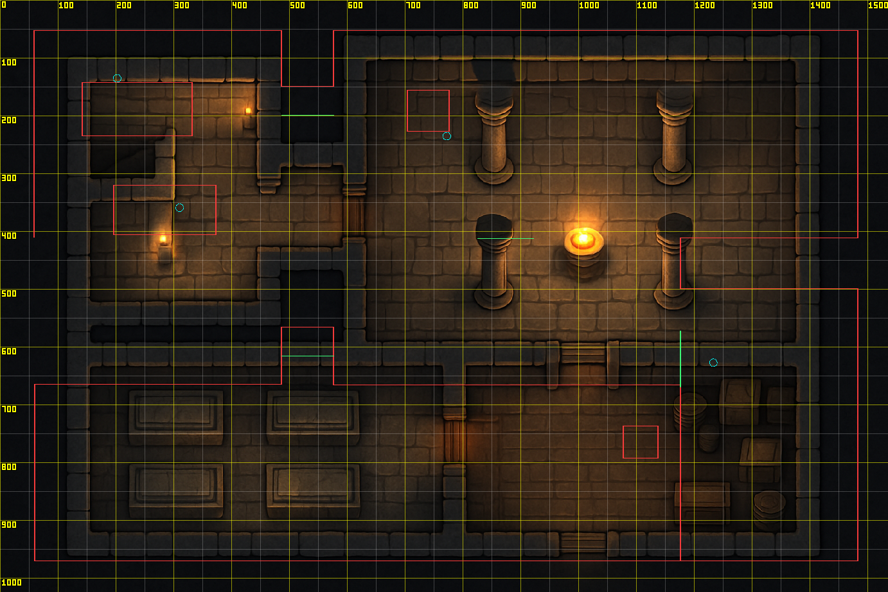
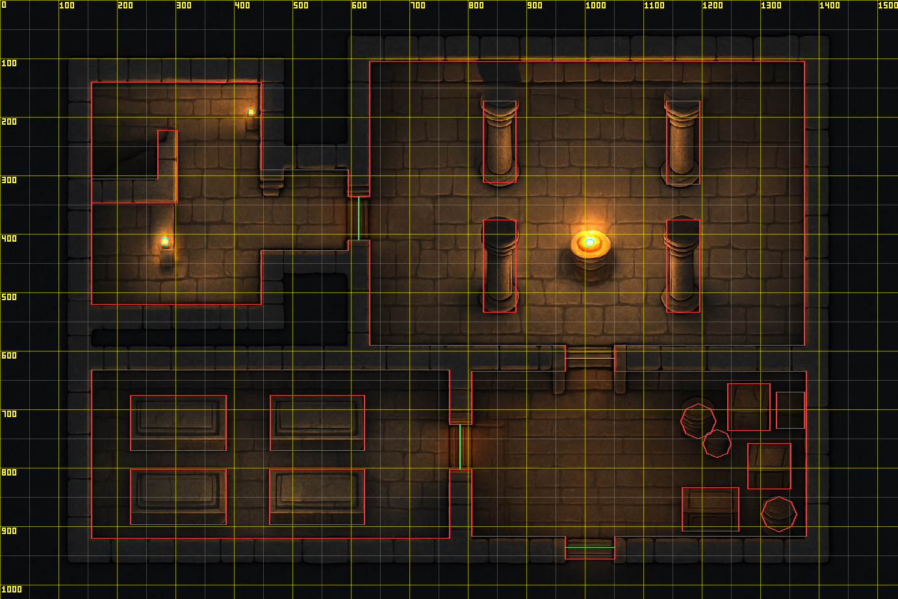
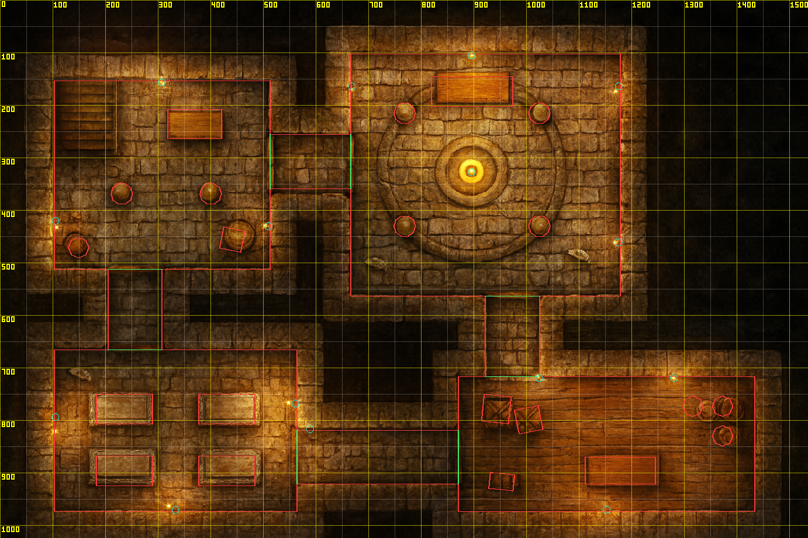
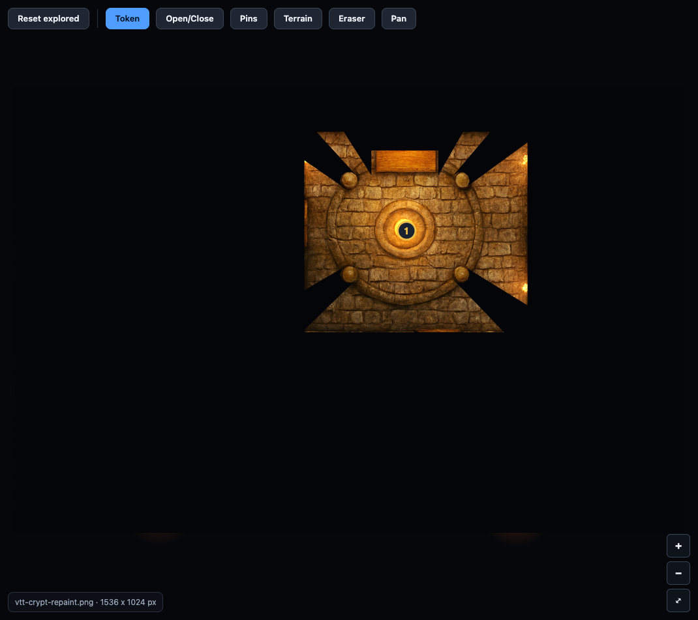
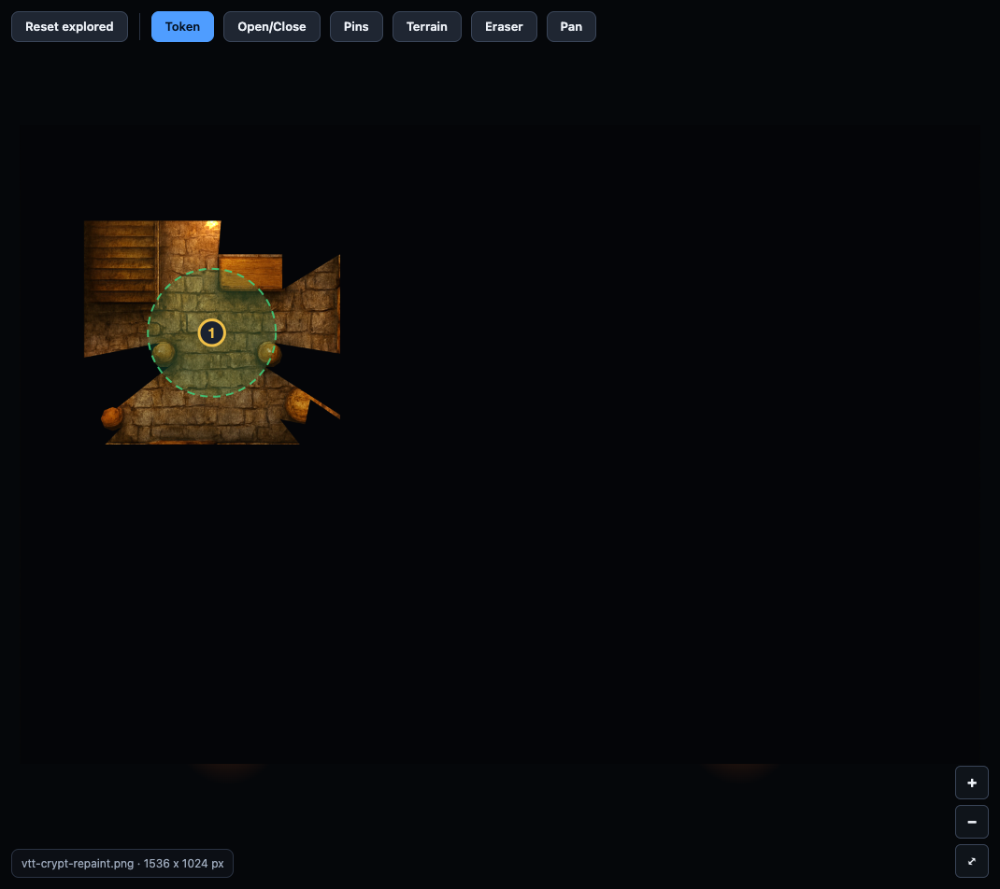
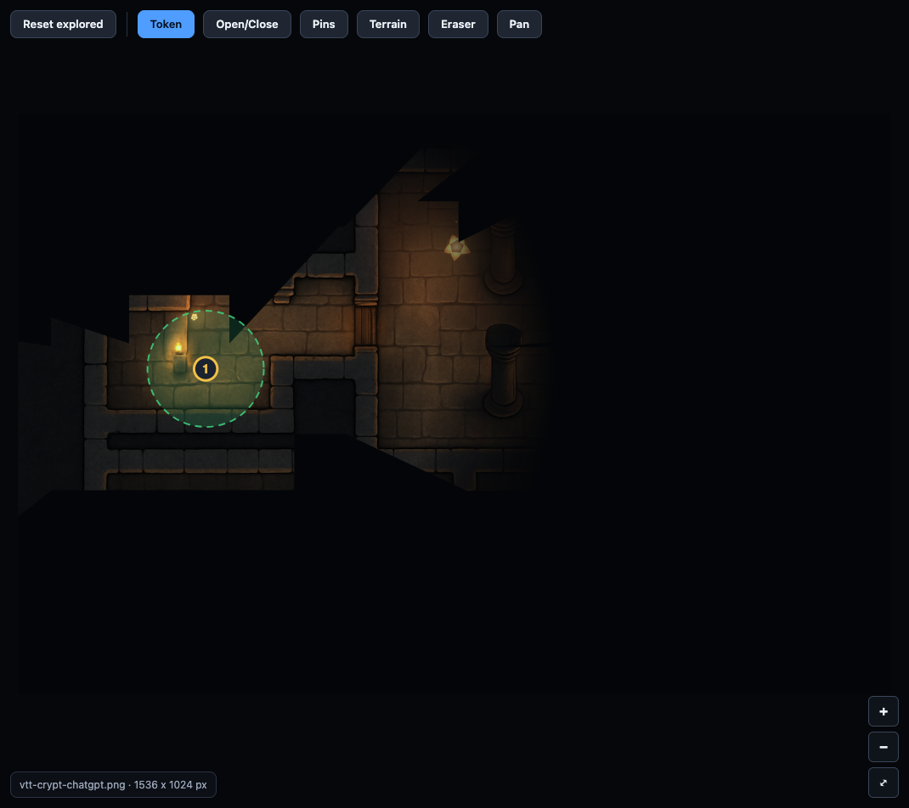
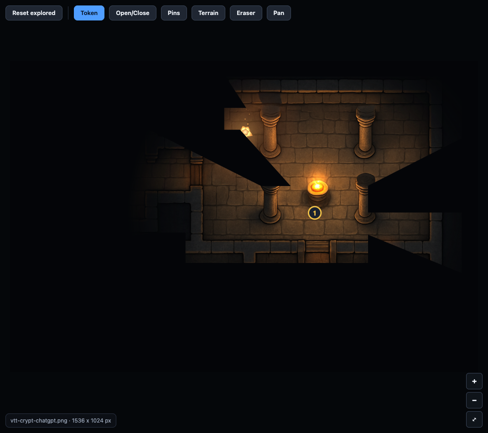
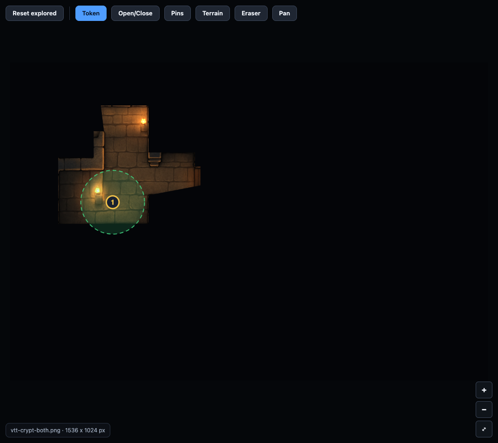
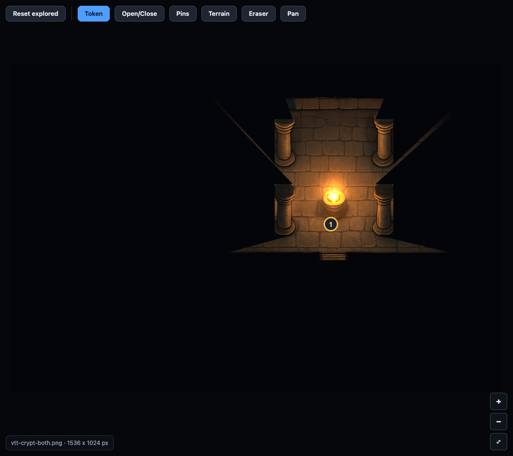

Battle map comparison: the same crypt, three ways
One brief (below), one size (1536 x 1024, 30 x 20 squares). Claude drew the picture and its walls, doors and lights in code. ChatGPT painted the picture with its image model and then read the walls off it with its own vision model, with nobody correcting the numbers. Both is ChatGPT's picture with the walls, doors, pillars, furniture and lights read off it by Claude with a pixel ruler. Pick one below and try it: choose the Token tool, click in a room, and watch the fog and the line of sight. Untick "DM view" to see what a player sees; the Open/Close tool opens a door.
What each one has (walls drawn in red, doors green, lights blue)



Fourth try: Claude draws the walls, ChatGPT repaints (the "upscale" idea)
Claude's code-drawn crypt was given to ChatGPT's image editor (gpt-image-1, high input fidelity, about $0.07) with the instruction to repaint it richly but keep every wall, door, pillar, tomb and torch exactly where it is. Claude's own walls, doors and lights were then laid over the result unchanged.



Line of sight, a token in the entry hall (left) and in the chamber (right)






Reading the result
| Picture | Walls, doors, lights | Effort | |
|---|---|---|---|
| Claude | Clean and clear, plainer | Exact (drawn from the plan) | A script; the same result every time; free |
| ChatGPT | Painterly and atmospheric (about $0.05) | Poor: an image model's reading of a picture does not give usable coordinates (a few cents more) | One command, but not playable |
| Claude walls + ChatGPT repaint | Painterly, in the same layout as Claude's map | Exact: the original walls, doors and lights, unchanged | Two steps and a check; about $0.07; no hand tracing |
| Both | ChatGPT's painting | Good: read with a ruler and checked by drawing the walls on the picture | Claude reads the picture in several steps; it is slow and was done by hand for this one |
The fourth way (Claude's code-drawn layout, repainted by ChatGPT with the layout locked) gives the painted look and exact walls with no hand tracing: the best of both here. The repaint moved a few small things by a few pixels, so it should always be checked with the overlay, and it costs about $0.07 a picture.
The lesson for a map editor: let an image model paint, and give the human (or Claude) an editor that overlays walls on the painting so they can be drawn, nudged and checked. Letting the image model place the walls by itself does not work yet.